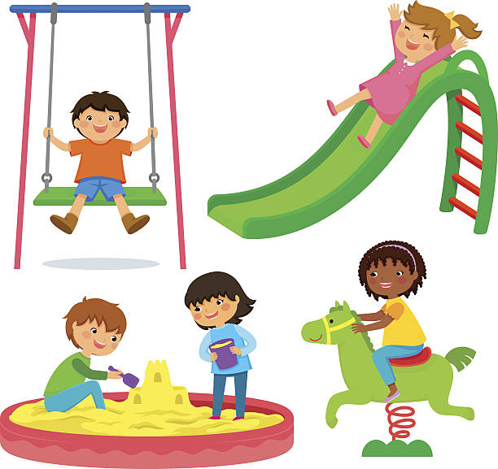
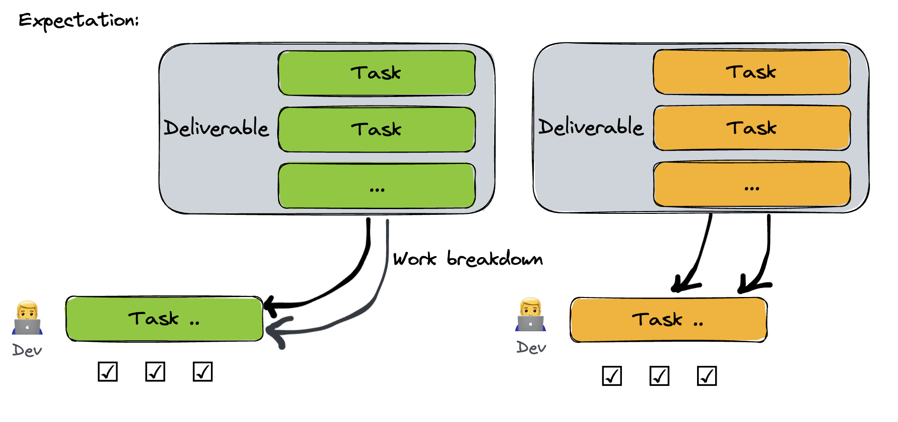
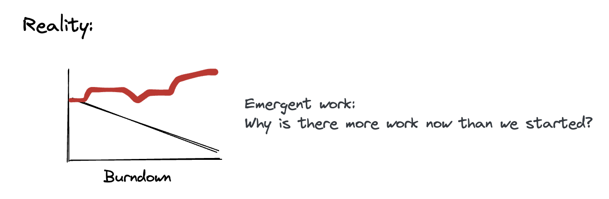
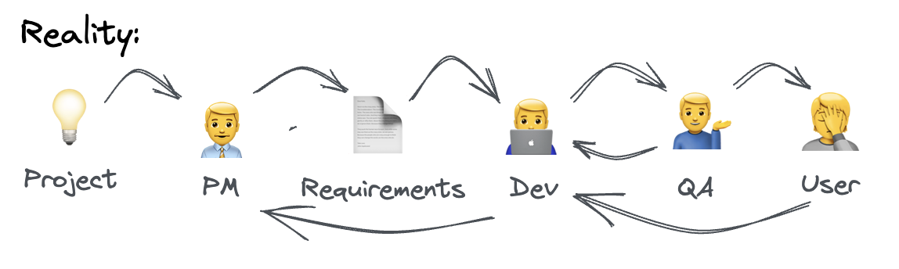
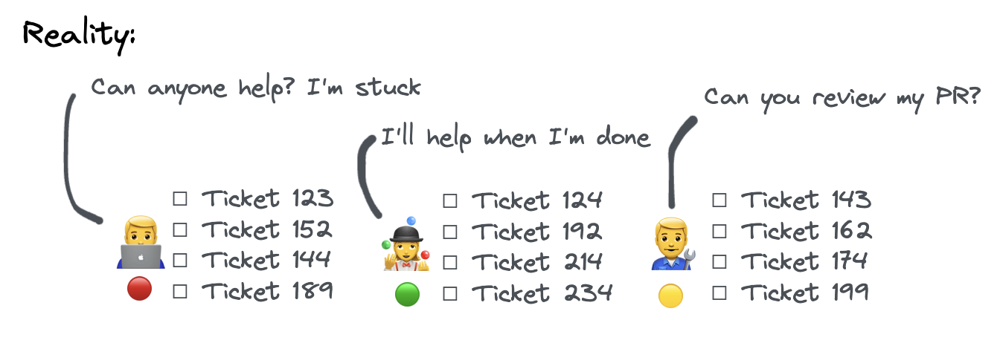
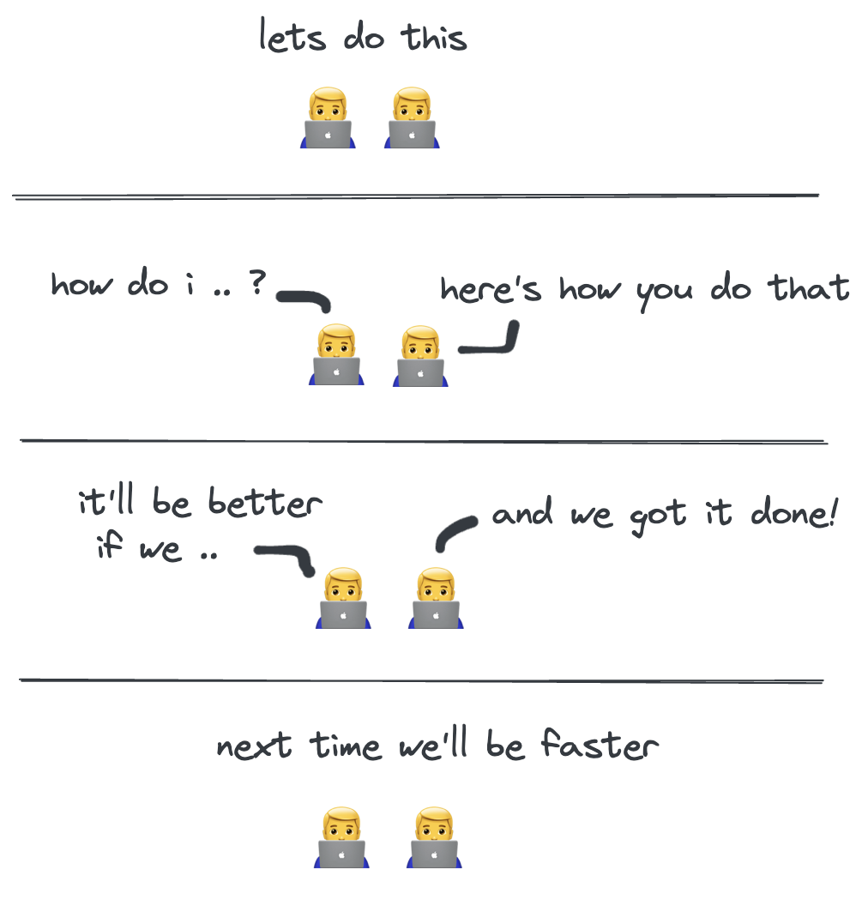
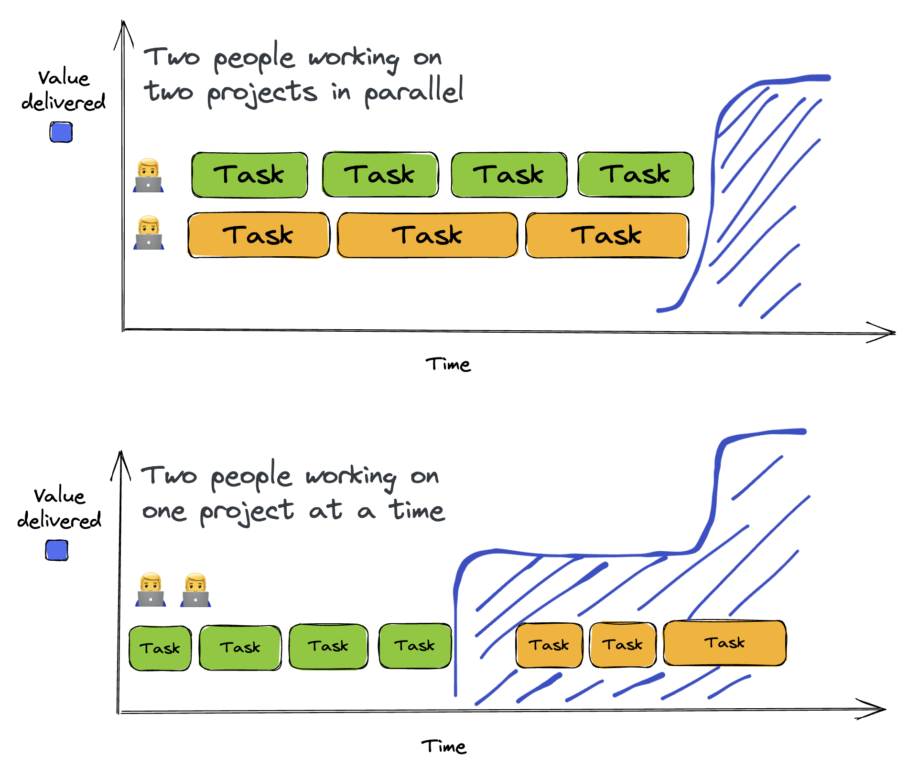
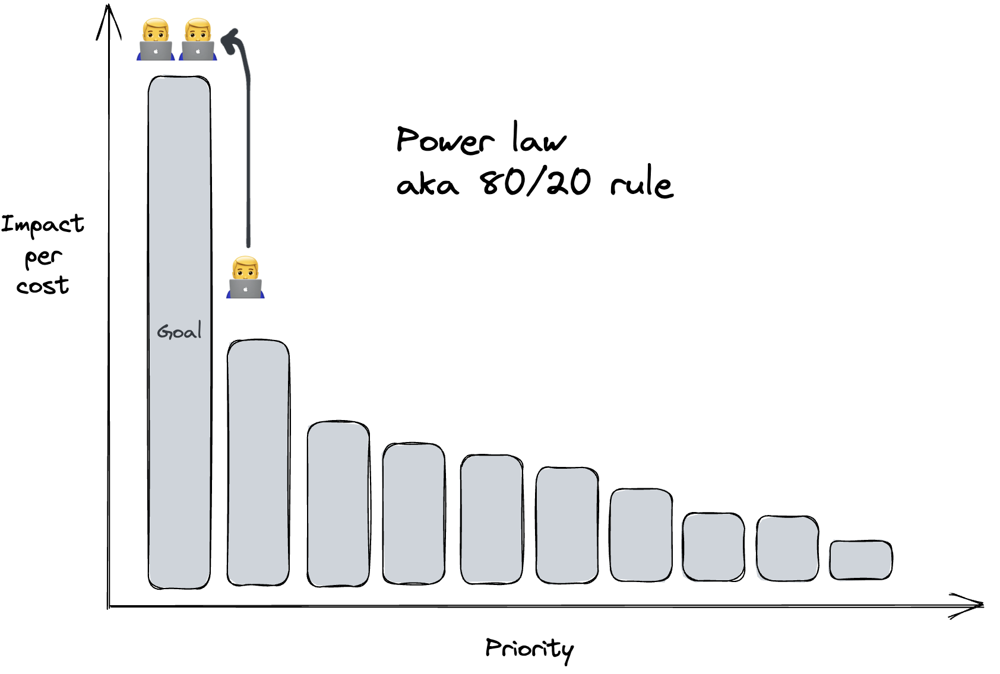
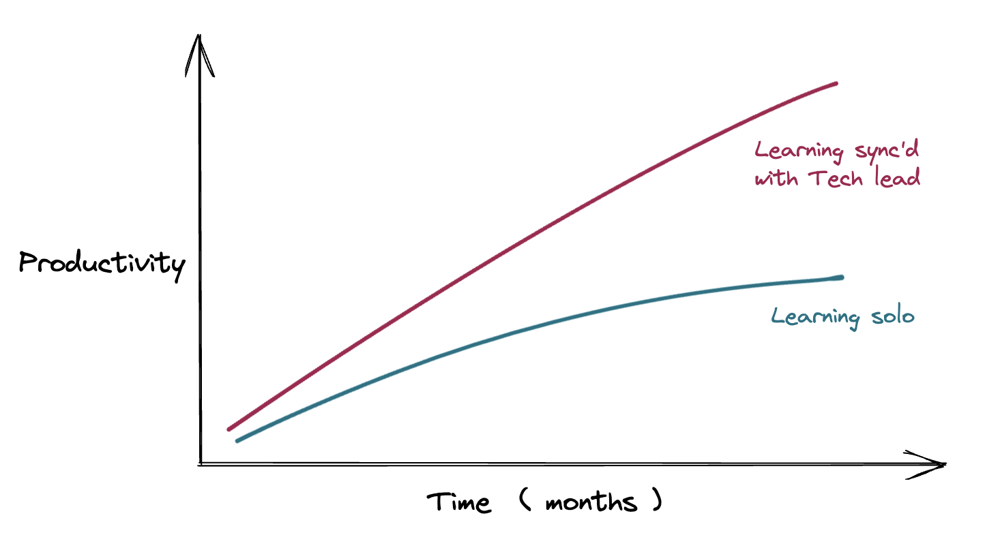

Why Work Together
 |
|---|
| Are these children playing together just because they’re close to each another? |
Working together is the cure that we need to produce better services, have more fun, and to grow as a team.
Individual Contributor
Joining a “team” as a “senior engineer” at a software company means becoming Individual Contributor (IC) fulfilling these expectations:
- Given a goal, come up with projects and write design docs
- Take on projects and report on their statuses
- Execute on the projects and take ‘ownership’ for the work
- Get yourself unstuck
- Independently resolve ambiguity
- Interface with PMs, designers, QA/support staff
This model of a generic engineer is easy to hire, train, evaluate and fire. In a megacorp where products may come and go, but the employees need to be recycled, this makes perfect sense. Parts of a PDE (product, design, engineering) need to be interchangeable in order to assemble teams quickly. It’s optimal for executives whose goal is to execute on their vision as fast as possible. In a culture of low human trust and high employee turnover, managers need contracts in the form of performance evaluations and job expectations.
Of shipping and maintenance, only shipping is celebrated and rewarded for its visibility. The greenfield project turns into a ball of mud as soon as it rains, and progress grinds to a halt via regressions. Cleanup duty is invisible and only the bare minimum code quality is enforced by CI (Continuous Integration) at the PR (Pull Request) gates.
Project Management
Managers see the situation, and conclude that the its resolution must be getting more stuff done with project management. Project management is a fantastic tool for accountability and exercising control over processes. Their responsibility is breaking down what technical work needs to be done, and distribute the tasks among the engineers who can code up the solution.

At first glance, anything can be achieved this way. Tech debt? Make up a project with a name and assign tickets to it. Product increment? Break it down and once all the parts are complete, the feature will be done. No matter how complicated a project may be, it can be decomposed ad infinitum to a neat list of check-boxes. Engineers are too busy coding, so they mustn’t be bothered with such non-technical tasks. The PDCA cycle consists of:
- Break down the tasks into discrete components
- Assign the tasks to each specialized engineer
- At each time increment, check the status of each task and task list
- If the tasks aren’t done fast enough, add or replace engineer
This results in the human equivalent of the infra world’s microservices architecture: each engineer instance being a self-contained docker nodes. If at first too slow, scale horizontally by adding more nodes.
But what if the requirements are unknown ahead of time? What if the feature can never be done? Does it make sense to apply the same problem-solving technique suited to solving complicated problems, to solving complex problems?
Complicated vs. Complex engineering systems
Further learning: The difference between Complicated and Complex
Unknown unknowns
In reality, we find that our expectations are defied by unknown unknowns. Requirements change. The proposed fix didn’t fix the issue. Leadership changed strategic goals because the investors said something aspirational. The users are giving us mixed signals. People left the team. We have a new designer now. The skip-level manager who asked for that dashboard got fired.

The goalpost shifts month to month, yet the accountability of projects prior remain. Project managers are beholden to static plans, and canceled projects mean that their sunk work is for naught. What room is there for any adaptation?
Handoffs
Another emergent phenomenon of project management is quality gates. At its face, it only makes sense to pursue projects that are worth the effort, so require PRDs (Product Requirement Document) before it gets passed to the next step. Designers polish designs for a review meeting before they hand it off to the engineers. Engineers’ code should be up to standard, so require CI to enforce checks. Quality gates ensure that each step conforms to some standard. But is the juice worth the squeeze?
Quality gates come bundled with hand-offs. Hand-offs accommodate swappable human components, with the benefit of standardized interface between humans. Nuance about the user’s needs are lost between requirements and design. The users notice this, and back flows the bugs and rework, which have only been accounted for via a 3x fudge factor in the schedule during planning.

Silos
To control the human resource in the project management PDCA, at most one resource must be assigned to indicate visibility for individual performance. Collaboration is allowed insofar as accountability is not interrupted. How would performance be evaluated if two people work on the same thing? It’s a diluted view.
The less help one demands, the more performant it must be. In this system, specialized knowledge is power that must be gained by oneself. Incentives for job preservation are at odds with teaching “teammates”.
When a ticket with my name on it is priority, then any help for others must wait. Why review someone else’s PR when I can be delivering more throughput? This works in reverse; I have to wait to get decisions, PRs, design backflows, or QA requests. When I’m waiting for answers, I better start another task instead of being idle. WIP (Work in progress) inventory expands as to fill the time waiting. Progress for each must be reported, further growing non-value-added muda.
Work assignments are determined by who can get it done the fastest, usually the one with most context who last worked on its adjacent component. For the sake of task completion, it is most efficient. It then serves to further secure their place in their trench of service to the corporation.
In a silo’d configuration, any ambiguity requires solo input if I were to prevent its dreadful delay. What is the expected quality of a decision made solo vs. made together? What are the costs of a bad architecture pattern hidden behind a ticket’s checkbox in the done column?

Who cares?
And you might say,
You’re complaining but stuff is getting done and nobody else cares
Well, the users care that it works how they expect it to. I care that my talent is directed towards a human need, not just a paycheck for a mortgage. I care that during my working years, I do the best work I possibly can, producing the highest quality code that won’t need me to explain how it works. I care that I have fun at work, because that’s how I learn and grow, for the benefit of both users and my career.
The benefits of working together
What then, is the alternative? Is it agile? Is it Scrum? But everybody hates those useless meetings. More processes on top of project management?
I’m not proposing a framework solution that will fix all your problems, but the vision for work is simply to work together. Two sets of eyes on the same problem at the same time, talking in the same context.

Your manager may not agree, and your peers may be thriving in their silo. But if you care, you may be able to envision improvements in code quality, peer learning, and richer work relationships.
More value added over time
An engineer is one who serves the service. Unlike baking cookies, the work we produce services users over time. Two people working together tends to produce working software faster than working alone [citation needed]. Compared to working alone, getting stuff done sooner will produce more value over time.

Working on the right things is more effective than doing more things
Unlike cookies, the value of product increments is variable. The cost of product increments is also variable. Estimates are guesses that are always wrong. But because of the giant differences between the most valuable and the next-most valuable is so huge, the precision required of the estimates only need to be enough to prioritize deliverables from one to the next. If the benefits of the product increments are also estimated wildly, then factoring both will yield the correct prioritization about half the time. Amazingly, this is an improvement over no estimation at all.
If two people work on the most important thing and get it done sooner, then it will provide more benefit over the same time period compared to them working on two most important things.

Learning & quality offsets the costs
See Isn’t pair programming slower than working in parallel?
A team’s performance depends on the collective knowledge and skill of its members. The fastest way that we know to get new members up to speed is to work together. There’s always going to be more knowledge than can be documented. Shortcuts, expert referrals, problem-solving approaches, etc. cannot be neatly be laid out in a FAQ somewhere. We often don’t know what we don’t know, and it cannot be searched for with words.

It’s not that simple
If it was that easy, we’d already be doing it. If you’re in a culture where working alone is the norm, then there will be several roadblocks to collaboration. Your project manager’s reputation and promotion opportunity is at stake if this works well. Politics will be involved, and you may be reprimanded. It may even mean that you have to quit your job and join a company that works at an office and meet people in flesh.
If work is important to you, if what you do for half the time you’re awake is an essential part of who you are, then I hope what you read today will have been a glimpse into what is possible. I personally experienced working together, shoulder-to-shoulder early in my career. It was my first paid gig as a programmer. I’ve been chasing that high ever since.